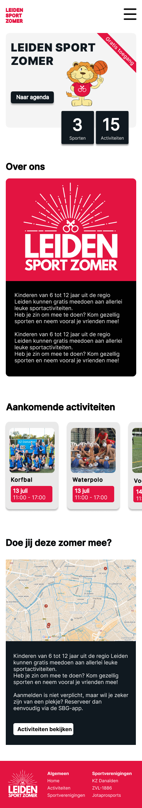
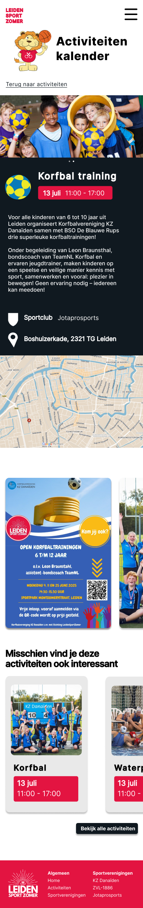

Project context
Leiden Sportzomer bestaat uit vrijwilligers die zich inzetten om jongeren meer te laten bewegen door sportevenementen te organiseren in de zomer. Samen met een frontend developer en UX designer heb ik gewerkt aan een nieuwe website.
Het doel was om een platform te creëren waar ouders, grootouders en jongeren eenvoudig sportactiviteiten kunnen ontdekken die plaatsvinden tijdens de zomervakantie.
Doelgroep
Jongeren (10–14), ouders en grootouders.
Doel
Meer jongeren activeren om te bewegen via sportactiviteiten.
Rol
UX/UI design binnen een team met developer en designer.
Visuals


Prototype
Het project is uitgewerkt in een interactief Figma prototype.
Bekijk prototypeResultaat
Een gebruiksvriendelijk platform dat sportactiviteiten in Leiden overzichtelijk en toegankelijk maakt voor verschillende doelgroepen.